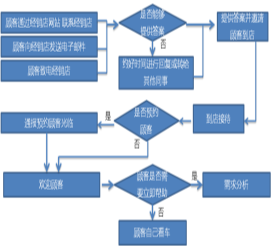
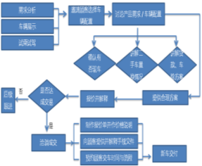
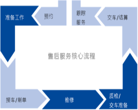
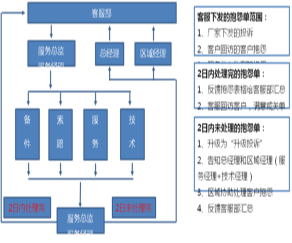

Evaluation Only. Created with Aspose.Words. Copyright 2003-2017 Aspose Pty Ltd.
为配合我司开展创建放心消费示范店活动，进一步规范公司经营行为，细化各业务环节管理，特制定本细则供员工对照执行。本细则自制定发布之日起执行，由公司行政部负责监督实施，执行情况作为员工绩效考核的重要依据，按照奖优罚劣的原则，定期公布实施情况和奖惩结果。
一、客户接待
（一）适用岗位：接待（问询）岗位
（二）工作流程：（流程图）

（三）具体要求：
1、明确岗位职责，规范接待流程，遵守接待礼仪，使用文明用语，为客户提供专业的汽车消费咨询和导购服务。
2、接待客户电话、微信等方式询问时，快捷准确解答客户的问题，对无法及时准确答复的问题应记录在案转交其他部门、其他岗位人员跟进答复。接待到店客户时，或直接跟进，或根据客户的实际需求将其转介至销售顾问或售后顾问。
3、不能出现客户到店无人接待、客户问询无及时回应的现象。
4、对于普通消费者难以理解的汽车行业信息参数及专业术语，应耐心予以解释，必要时可结合实物向消费者予以说明。
二、销售导购
（一）适用岗位：销售岗位
（二）工作流程：（流程图）

（三）具体要求：
1、推销环节：充分了解客户需求，就本品牌车辆配置、性能、价格及购车相关优惠政策、汽车消费金融贷款、付款程序、保修条款和增值服务等方面向客户进行全面和客观真实的介绍，不误导、不哄骗、不欺诈消费者，不作虚假承诺，为客户作出消费决策提供诚信优质的服务。
2、达成购车意向：向客户详细解释购车合同条款，尤其是对所购买车辆的型号、款式、价格和交付日期等关键内容，以及办理购车消费贷款、车辆保险和机动车登记等服务的细节，要作反复说明，保障消费者的知情权，确保客户在签署购车合同等法律文件前充分理解有关条款内容，明确知悉自己的法律权利与责任、义务，重要内容要在合同中清晰载明，需消费者确认的要由消费者签署确认，避免出现不必要的纠纷；不使用含有侵犯消费者合法权益利益的“霸王条款”的销售合同。
3、车辆交付前准备：按照购车合同约定进行车辆交付前准备，包括陪同客户选车、调试、确认，协助办理车辆消费贷款、办理车辆登记等，对承诺消费者赠送和加装（改装）的设备和物品，要100%兑现承诺。 客户选定购买的车辆后，未经客户允许不得擅自使用该车辆，获得客户允许使用车辆的，不得使用该车辆作与履行本消费合同无关之用途。
4、车辆交付：协助客户验收车辆，了解车辆各项功能的操作、保修范围、保养间隔等售后服务事宜，提供正规发票、合格证、保养手册、信息表、使用说明书等齐全手续。
三、保养维修
（一）适用岗位：维保岗位
（二）工作流程：（流程图）

（三）具体要求：
1、规范维修保养服务作业流程，明确服务顾问、维修技工、维修班长和技术经理等相关人员岗位职责，严格把守汽车保养和维修质量关，从源头上保障汽车安全运行。
2、严格遵守国家机动车维修行业管理规定和厂家相关规定，审核维保岗位人员的技术资格和技术水平，定期组织相关岗位人员进行专业技术和职业道德培训，提高维修技术人员的专业技能和职业操守，为客户提供优质的保养维修服务。
3、服务顾问应向客户详细了解车辆状态，与客户一同进行环车检查，把车辆主要状态如实记录在《接车检查单》；服务顾问应根据客户车辆状况，综合技术人员意见后向客户提供合理的保养维修建议，并向客户说明保养或维修项目的必要性、价格与作业时长，经客户认可后制定《任务委托书》，经客户签署确认后方可进行保养维修作业。
4、维修技工依据《接车检查单》和《任务委托书》对车辆进行再次检查，确认与预判无异后开展保养、维修作业。如检查发现车辆状况与预判不一致，或在保养、维修作业中发现车辆存在其他问题，需变更或增加保养、维修项目的，应填写《维修项目变更申请表》，并通知服务顾问与客户沟通，必要时可引领客户前往现场查看，待客户重新确认后方可进行保养、维修作业。对不在店等待无法进行书面确认的客户，服务顾问应使用带有录音功能的电话或手机信息、微信等方式通知客户，告知维修项目变更的原因与费用，待客户同意后方可《维修项目变更申请表》中有关项目的保养、维修作业，征求意见过程需保留完整的录音或文字记录作为佐证，避免出现消费纠纷。客户不接受《维修项目变更申请表》保养维修建议的，不得强制客户接受相关服务和收取有关费用。
5、对于客户同意维修但所需零配件缺货的项目，服务顾问通知备件计划订货员，由备件计划订货员在WDMS系统完成《备件订货需求表》，在备件到货后第一时间通知客户。
6、如因客户主动请求或其他特殊原因，需在保养维修中使用非原装备件/ 附件的，明确告知客户原装备件/ 附件与非原装备件/ 附件的质量区别及质保区别以及潜在的风险。
7、维修技工在车辆保养、维修结束后，根据保养维修清单自行检查，逐一对照查看是否有遗漏项目，如有遗漏则实施弥补，检查无误后在《任务委托书》上的主修/自检栏以及《常规保养单》上签字，将维修车辆和“服务包” 交班组长进行互检作业。
8、班组长对维修技工所做的项目逐一检查，经互检合格后，由互检人在《任务委托书》互检栏签字确认互检合格后，将车辆交质量检查员进行终检；经终检合格，质量检查员在《任务委托书》、《常规保养单》终检栏签字，作为汽车完成保养、维修作业可以出厂的凭据。
9、互检不合格的车辆，由班组长交维修技工返工，如返工将影响交车时间，需通知服务顾问与客户沟通。终检不合格的车辆，由质量检查员开具《内部返工单》，标明不合格项目后，交由班组长跟进处理。对于检验不合格率较高的维修技工和班组长，要视情况采取加强培训、批评教育、扣发奖金及调离岗位等处理措施。
10、在保养、维修中更换下的旧件由维修技工整理并放在相应位置，做好旧件展示的准备工作；对大件或特殊件，按规定放置在指定旧件回收区域等待回收，若客户提出，服务顾问应带领客户观看旧件了解故障点及更换的必要性。
11、终检合格后，服务顾问应带同客户一同验收，对照《任务委托书》、《常规保养单》或《维修项目变更申请表》讲解本次保养、维修服务项目，重点讲解不合格项及展示修复结果。在验车过程中，如客户对本次保养、维修项目质量或其他服务存在疑问，服务顾问应核实具体情况并作出相应处理。
12、在保养维修车间安装监控设备，对保养维修作业进行实时监控和视频录像，视频录像应留存不少于一个月，便于各方回查。
四、咨询投诉
（一）适用岗位：客服岗位
（二）工作流程：（流程图）

（三）具体要求：
1、加强对售后服务人员的培训，建立客户服务档案，健全投诉处理机制，明确投诉处理责任人以及处理权限、流程、时限等，对客户的咨询和投诉做到及时处理，及时回复，及时汇总反馈。
2、实施投诉分类分级管理机制，正确判断客户投诉类型和紧急程度，分析客户投诉的产生原因，制定具有针对性的解决方案，确保问题在最短时间内得到有效解决。能当天解决的问题不能拖延到第二天；因岗位权限制约无法解决的，马上向上一级管理人员报告寻求协助；在48小时内未能解决的投诉，上报部门主管采取应对措施。
3、客户关系管理部对投诉产生的原因、解决方案进行总结分析，及时向有关情况向公司决策层及相关部门主管进行反馈，并有针对性地提出整改建议，推动公司经营运行水平的整体提高。
4、严格按照《消费者权益保护法》等法律法规的要求，自觉履行经营者责任义务，着力营造安全放心的消费环境 ，依托消费维权站及时妥善解决消费纠纷，加强消费投诉数据监测分析，不断提升服务效率和服务质量。